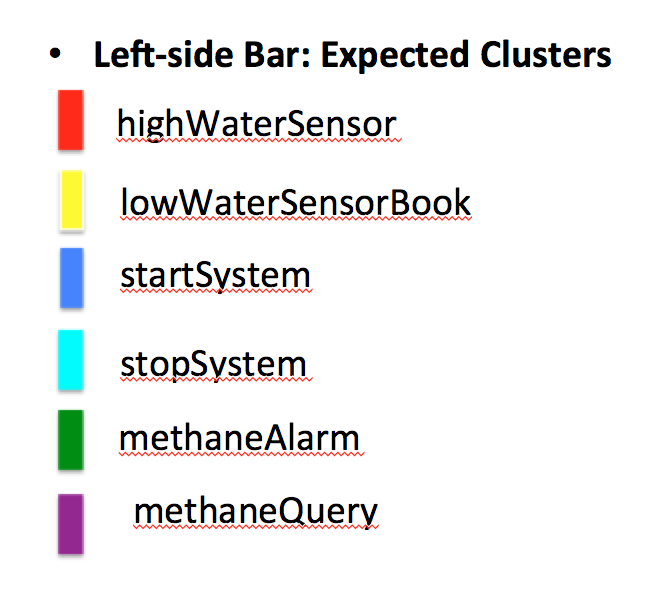

Environment.c
#include "Environment.h"
/*
* Waterlevels:
* 0: below the low sensor
* 1: between low and high sensors
* 2: above high sensor
*/
int waterLevel = 1;
int methaneLevelCritical = 0;
void lowerWaterLevel() {
if (waterLevel > 0) {
waterLevel = waterLevel-1;
}
}
void waterRise() {
if (waterLevel < 2) {
waterLevel = waterLevel+1;
}
}
void changeMethaneLevel() {
if (methaneLevelCritical) {
methaneLevelCritical = 0;
} else {
methaneLevelCritical = 1;
}
}
int isMethaneLevelCritical() {
return methaneLevelCritical;
}
void printEnvironment() {
printf("Env(Water:%i", waterLevel);
printf(",Meth:");
if (methaneLevelCritical)
printf("CRIT");
else
printf("OK");
printf(")");
}
int getWaterLevel() {
return waterLevel;
}
//-------highWaterSensor-------
int isHighWaterSensorDry() {
// cpachecker bug
//return waterLevel < 2;
if (waterLevel < 2) {
return 1;
} else {
return 0;
}
}
//-------LowWaterSensor-------
int isLowWaterSensorDry() {
return waterLevel == 0;
}
Environment.h
#include "featureselect.h"
void lowerWaterLevel() ;
void waterRise();
void changeMethaneLevel();
int isMethaneLevelCritical();
int getWaterLevel();
void printEnvironment();
//-------highWaterSensor-------
int isHighWaterSensorDry() ;
//-------LowWaterSensor-------
int isLowWaterSensorDry() ;
featureselect.c
#include "featureselect.h"
/*
* dummy feature selection
*/
int select_one() {
int choice;
return choice;
}
void select_features() {
}
void select_helpers() {
}
int valid_product() {
return 1;
}
featureselect.h
#ifndef FEATURESELECT_H
#define FEATURESELECT_H
/*
* dummy featureselect
*/
int select_one();
void select_features();
void select_helpers();
int valid_product();
#endif
MinePump.c
#include "Environment.h"
#include "MinePump.h"
int pumpRunning = 0;
int systemActive = 1;
void timeShift() {
if (pumpRunning)
lowerWaterLevel();
if (systemActive)
processEnvironment();
}
void processEnvironment() {
//-------highWaterSensor-------
if (!pumpRunning && isHighWaterLevel()) {
activatePump();
}
//-------LowWaterSensor-------
if (pumpRunning && isLowWaterLevel()) {
deactivatePump();
}
//-------methaneAlarm-------
if (pumpRunning && isMethaneAlarm()) {
deactivatePump();
}
}
void activatePump() {
//-------methaneQuery-------
if (!isMethaneAlarm()) {
//---origin---
pumpRunning = 1;
//---origin---
} else {
//System.out.println("Pump not activated due to methane alarm");
}
}
void deactivatePump() {
pumpRunning = 0;
}
int isMethaneAlarm() {
return isMethaneLevelCritical();
}
int isPumpRunning() {
return pumpRunning;
}
void printPump() {
printf("Pump(System:");
if (systemActive)
printf("On");
else
printf("Off");
printf(",Pump:");
if (pumpRunning)
printf("On");
else
printf("Off");
printf(") ");
printEnvironment();
printf("\n");
}
//-------highWaterSensor-------
int isHighWaterLevel() {
return ! isHighWaterSensorDry();
}
//-------LowWaterSensor-------
int isLowWaterLevel() {
return ! isLowWaterSensorDry();
}
//-------startCommand-------
void startSystem() {
// assert !pumpRunning;
systemActive = 1;
}
//-------stopCommand-------
void stopSystem() {
if (pumpRunning) {
deactivatePump();
}
// assert !pumpRunning;
systemActive = 0;
}
MinePump.h
#include "featureselect.h"
void timeShift();
void activatePump();
void deactivatePump();
int isPumpRunning();
void printPump();
//-------startCommand-------
void startSystem();
//-------stopCommand-------
void stopSystem();